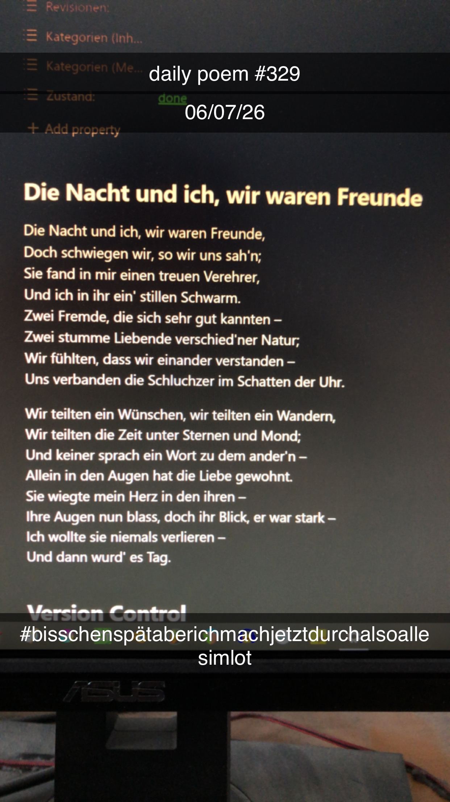

Die Nacht und ich, wir waren Freunde
Die Nacht und ich, wir waren Freunde,
Doch schwiegen wir, so wir uns sah'n;
Sie fand in mir einen treuen Verehrer,
Und ich in ihr ein' stillen Schwarm.
Zwei Fremde, die sich sehr gut kannten –
Zwei stumme Liebende verschied'ner Natur;
Wir fühlten, dass wir einander verstanden –
Uns verbanden die Schluchzer im Schatten der Uhr.
Wir teilten ein Wünschen, wir teilten ein Wandern,
Wir teilten die Zeit unter Sternen und Mond;
Und keiner sprach ein Wort zu dem ander'n –
Allein in den Augen hat die Liebe gewohnt.
Sie wiegte mein Herz in den ihren –
Ihre Augen nun blass, doch ihr Blick, er war stark –
Ich wollte sie niemals verlieren –
Und dann wurd' es Tag.
